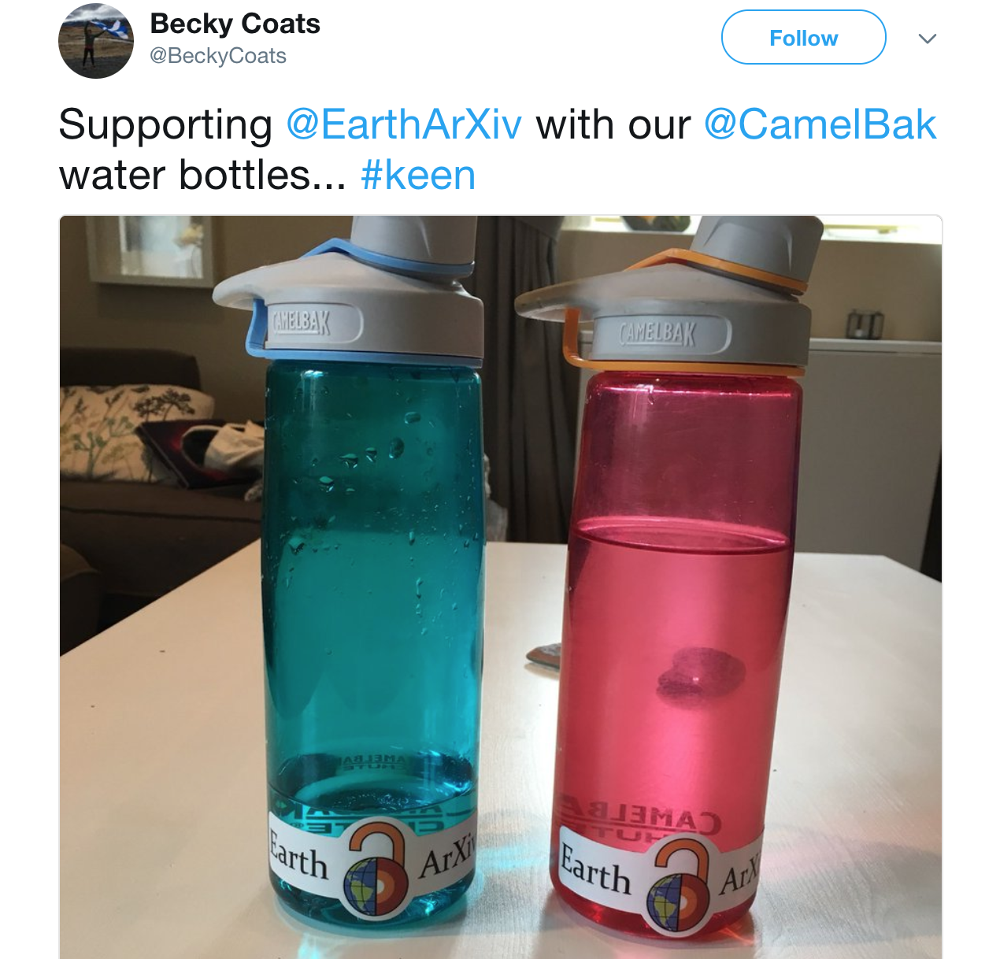

What Do 400 Earth Science Preprints Sound Like?
Tom Narock, June 11, 2018
We owe our early success to you!
EarthArXiv is turning 8 months old. Honestly, when we officially launched back in October 2017 we weren't sure how long it would take to become sustainable, if at all. Yet, as we approach the one year mark we've already recieved 400 submissions and have gotten large parts of the Earth science community to begin thinking differently about preprints and open science. And that's all thanks to you! If you've contributed a paper, signed on as a Community Ambassador, mentioned EarthArXiv to colleagues, or proudly displayed your EarthArXiv sticker, then you've helped get us to this point. And we'd like to say a big Thank You!
We'd like to look back and acknowledge all of the open science that's taken place. We can do that with some basic charts. For example, Figures 1 and 2 show the weekly submissions and cumulative EarthArXiv submissions, respectively.

However, we wanted to try something different. Look at the data in a new way. Maybe even listen to all that open science. For that, we need to turn to sonification.
Soni-What?!?
Sonification is the process of turning nonauditory data into sound. The process itself has been around for some time (Hedges, 1978) and experimental results (Last and Usyskin 2015) have shown the scientific utility of sonification. Untrained listeners (those with no formal training in music) are able to make useful distinctions in the data. Listeners could easily apply exploration tasks such as classification and clustering to sonified data. However, we're not looking to do any analysis. We just want to have some fun with our usage data!
Data Sets and Open Science
The Open Science Framework, on which EarthArXiv is built, has a freely available application programming interface (API). In general terms, this is a set of clearly defined methods of communication by which anyone can write software to query OSF systems. That's right, EarthArXiv (and all of the Center for Open Science preprint systems) is open all the way down. Not only can you freely publish and share science, but you can also freely and openly query the system via community developed tools. We've begun an initial open software library if you're interest.
Using this software library we queried EarthArXiv for the publication dates of all its preprints. These data were combined to determine the number of papers submitted each week from inception until the present. This is how we generated Figures 1 and 2 above. From there, we used more open tools to sonify the data.
There are two components to sonification. The first is algorithmic in that we need to map our data to the range of musical notes. The second component is more artistic where we can experiment with scales and note duration to make the sonified data sound a little more pleasing. We used version 3 of the MusicAlgorithms site for our sonification.
The first step in the process is to convert each data point into a pitch (musical note). MusicAlgorithm gives us the option of mapping our data onto the entire 88 pitches (notes) of a piano; however, the range of our data is not very large so we chose to constrain our music around middle C (the key that's roughly in the middle of a piano keyboard). The mapping process also determines the duration of each note; e.g. whole note, half note, quarter note, etc. Finally, we’re asked to choose a musical scale for our sonified data. Scales are often associated with emotion and musicians use different scales to convey feelings in their pieces. This is the point where I admit I'm a musical theory novice and just went with one of the most popular scales. I chose the C-major scale, which is happy and upbeat and seemed representative of this community. In the spirit of open science, I'm sharing all my data here in case those more musically inclined would like to play with the mappings.
The output of MusicAlgorithms is a MIDI file, which is a technical standard for digitally encoding music and working with audio devices. This MIDI file is included in the above link and can also be imported into common music software, such as GarageBand, where we can assign various instruments to play the encoded music.
Here’s a classical music representation of the submission data played by a string ensemble.
Not a fan of classical music? Try this rock version. Here an electric guitar plays the submission data while drums accompany in the background.
Finally, ever wonder what open science sounds like coming out of a cathedral organ? Probably not. Here you go anyway.
Would you like to be part of the music of open science? Join the open science discussions on social media (Twitter and Facebook), submit a preprint, look over our resources and share with your colleagues, or just learn more.
And for all those who have submitted papers, tweeted about papers, and promoted EarthArXiv in various ways - Thank You! You're part of the power of open science and your efforts are reflected in the music. Rock on open science. Rock on.
Additional References
Want more sonification? Aside from the MusicAlgorithms website, there are sonification tools available for many popular programming languages. There's audiolyzR for R and miditime for Python. I've also heard good things about Sonic Pi although I've not had a chance to try it myself.
There's also Climate Data Turned into Music, our galaxy's rotation turned into blues music, and this wonderful sonification of a university's library checkouts